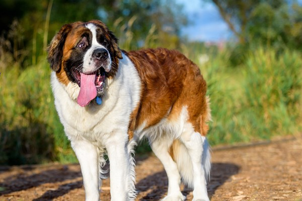
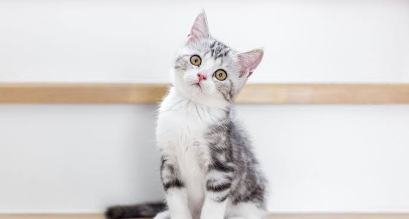

Thor
Brincalhão, leal e muito dócil. Convive bem com crianças e outros cães.
✔ Vacinado · Castrado · Vermifugado · Microchip
Quero adotar o(a) ThorHá alguém esperando por você agora mesmo. Adote um cão ou um gato resgatado e transforme duas vidas: a dele e a sua.

Rex passou anos preso em um quintal antes de ser resgatado. Apesar do tamanho, é um gigante gentil que só pede um passeio, um sofá e alguém que volte para casa todos os dias.
Quero adotar o RexCada um tem uma história, uma personalidade e muito amor para dar.
Brincalhão, leal e muito dócil. Convive bem com crianças e outros cães.
✔ Vacinado · Castrado · Vermifugado · Microchip
Quero adotar o(a) Thor
Dócil, carinhosa e apaixonada por lugares quentinhos. Ótima com crianças e outros gatos.
✔ Vacinada · Castrada · Vermifugada · Microchip
Quero adotar o(a) Luna
Brincalhão, sociável e cheio de energia. Ideal para famílias animadas.
✔ Vacinado · Castrado · Vermifugado
Quero adotar o(a) MingauVeja os perfis e escolha quem combina com a sua rotina.
Tire dúvidas e receba orientação sobre cada etapa.
Assine o termo de adoção e conte com o nosso acompanhamento.
Adote, apadrinhe, doe ou seja voluntário. Cada gesto devolve esperança a quem só conheceu o abandono.